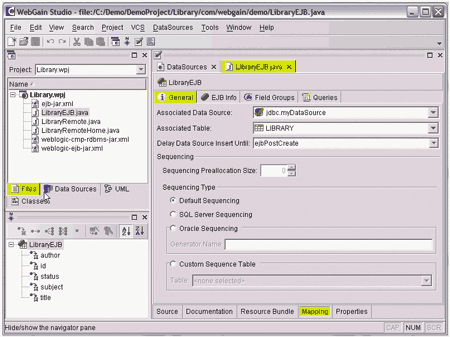

Говоря о средствах разработки Java-приложений, было бы в корне неверно рассматривать Java лишь как язык программирования или как средство написания апплетов и иных простых приложений для настольных компьютеров и пользователей (то, что описывается спецификацией J2SE - Java 2 Standard Edition). Столь узкая точка зрения, пока еще свойственная начинающим разработчикам и некоторым сторонникам упрощенного подхода к разработке приложений, устарела уже несколько лет назад. За последние годы интерес к Java был обусловлен не особенностями его как языка программирования, а появлением таких технологий, как J2EE (Java 2 Enterprise Edition), включая JSP (Java Server Pages), J2ME (Java 2 Micro Edition), и ряда других спецификаций, сделавших Java популярной платформой для создания корпоративных решений, поддерживаемой почти всеми производителями ПО. Основная сфера применения Java - это приложения масштаба предприятия и распределенные системы, создаваемые коллективом разработчиков. Именно с этой точки зрения и следует рассматривать средства разработки на Java, присутствующие на современном рынке ПО.
Особенности современных Java-инструментов
Из особенностей средств разработки Java-приложений, интересных с точки зрения создания корпоративных решений, следует отметить средства повышения производительности труда разработчиков; поддержку моделирования данных и приложений; возможности, связанные с повторным использованием моделей и кода; поддержку средств и стандартов создания распределенных приложений и их интеграции, включая поддержку J2EE и Web-сервисов XML, а также возможность создания мобильных решений.
Говоря о средствах повышения производительности труда программистов, мы не будем обсуждать такие ставшие уже привычными вещи, как цветовое выделение синтаксических конструкций, визуальные редакторы пользовательских интерфейсов, поддержка создания приложений с базами данных (в данном случае речь идет об универсальном механизме доступа к данным JDBC, Java DataBase Connectivity) или наличие средств обычной и удаленной отладки - без них ни один инструмент для разработки приложений уже давно не воспринимается всерьез.
Из менее тривиальных функций отметим в первую очередь средства рефакторинга, или, образно говоря, "приведения кода в порядок". Под рефакторингом понимается автоматическое внесение сопутствующих изменений в код при переименовании классов (например, модификация кода, содержащего ссылки на переименованный класс) и изменении параметров методов, автоматическое добавление конструкций try...catch вокруг блока кода с учетом возможных исключений, которые могут произойти при вызове методов, содержащихся в этом блоке, и т. п. Такие действия необходимы при коллективной работе над большими проектами и при повторном использовании кода.
Помимо этого качественные Java-инструменты могут оснащаться средствами создания тестовых классов; средствами конвертации файлов SQLJ (спецификация, созданная в 1998 г. при участии Oracle, IBM, Sun, Compaq, Sybase и Informix и описывающая операторы SQL, встроенные в Java) в Java-код; различными механизмами, упрощающими поставку приложений; мастерами для создания Web-приложений и Web-сервисов и для генерации кода на основании описаний WSDL (Web Services Description Language - язык описания интерфейсов Web-сервисов).
Создание Java-приложений масштаба предприятия сейчас практически немыслимо без применения средств UML-моделирования. Такие средства могут включаться непосредственно в состав Java-инструментария либо поддерживаться на уровне соответствующих интерфейсов.
Особо стоит остановиться на поддержке создания Enterprise Java Beans (EJB) - программных объектов, которые запускаются на исполнение под управлением серверов приложений, поддерживающих спецификацию J2EE. Эта возможность, реализованная сегодня во всех развитых инструментальных средствах разработки Java-приложений (правда, иногда только в наиболее дорогих редакциях этих продуктов), наверное, наиболее важна с точки зрения создания корпоративных решений.
Серверы приложений сейчас служат основой многих корпоративных решений, в частности, распределенных приложений, реализующих схемы B2C (например, онлайновая продажа товаров, бронирование билетов и мест в гостиницах, услуги страхования), B2B (виртуальные площадки для заключения торговых сделок между предприятиями), B2E (схемы "предприятие - сотрудник", скажем, корпоративные порталы).
Отметим, что нередко в корпоративных решениях применяются конфигурации, содержащие несколько серверов приложений. Некоторые поставщики Java-инструментов выпускают собственные серверы приложений, но многие из них поддерживают создание EJB и для серверов приложений других производителей.
Говоря о корпоративных решениях, нельзя не отметить проблему интеграции различных приложений, находящихся как внутри одного предприятия, так и в информационных системах разных предприятий. Эта проблема сейчас актуальна не только на Западе, но и в нашей стране, переживающей последствия так называемой островковой автоматизации. Один из достаточно универсальных и простых способов ее решения - реализация функций приложений, к которым следует предоставить доступ извне, в виде Web-сервисов XML. Другие программы, поддерживающие Web-сервисы, смогут обращаться к этим функциям независимо от того, на каких платформах эксплуатируются эти приложения и с помощью каких средств разработки они созданы. В настоящее время популярность этой технологии интеграции быстро растет, и большинство производителей серверов приложений и средств разработки так или иначе реализовали поддержку Web-сервисов и связанных с ними технологий.
Следующая важная особенность, характерная для большинства современных Java-инструментов, - это поддержка создания мобильных решений, базирующихся на спецификации J2ME. По оценкам аналитической компании Gartner Group, к 2004 г. 37% приложений для PDA (Personal Digital Assistant) с вероятностью 0,7 будут основаны на J2ME, а к 2005 г. с той же вероятностью 65% сотовых телефонов будут оснащены виртуальной Java-машиной. Для поддержки мобильных решений могут применяться различные способы - от добавления в среду разработки дополнительных мастеров и классов до создания специализированных редакций Java-инструментов, включая варианты для конкретных типов мобильных устройств.
Как правило, современные средства создания Java-приложений поддерживают разработку приложений для нескольких различных платформ, а нередко и сами существуют в версиях для нескольких платформ (как правило, это Windows, Linux, Solaris, иногда другие ОС).
В заключение отметим, что собственно средство разработки Java-приложений может поставляться как отдельно, так и в составе комплекта инструментов, включающих обычно средства UML-моделирования, версию сервера приложений, предназначенную для разработки и отладки EJB, а также, возможно, иные инструменты (например, средства создания пользовательских интерфейсов Web-приложений или средства оптимизации производительности приложений).
Лидеры рынка Java-инструментов
По данным аналитической компании Gartner Group (http://www.gartner.com), к началу 2002 г. лидерами рынка средств разработки Java-приложений были Borland (http://www.borland.com), IBM (http://www.ibm.com), Oracle (http://www.oracle.com) и WebGain (http://www.webgain.com), а Sun (http://www.sun.com) относилась к компаниям, имеющим четкое видение рынка (см. Mark Driver, Joseph Feiman. 2002 Java IDE Vendor Magic Quadrant - Research Note M-14-1330, 13 November 2001). Давая эту оценку, аналитики учитывали положение компании на рынке (наличие партнеров, финансовую стабильность, направления бизнеса) и такие особенности продуктов, свидетельствующие о правильном видении рынка ПО, как поддержка спецификаций J2SE, J2EE, J2ME, а также Web-сервисов XML.
Отметим, однако, что со времени создания этого отчета на рынке произошли некоторые изменения. В частности, компания Sybase (http://www.sybase.com) отказалась от дальнейшей поддержки своего средства разработки Java-приложений PowerJ, рекомендуя пользователям сменить его на Borland JBuilder Sybase Edition. Уход Microsoft (http://www.microsoft.com) с рынка средств Java-разработки теперь уже не вызывает никаких сомнений. Но самым неординарным событием оказалось решение лидера в сегменте Java-инструментов, компании WebGain. По сообщениям ComputerWire (http://www.computerwire.com), в начале июня WebGain объявила о продаже компании Oracle бизнеса, связанного с продуктом TopLink, предназначенным для организации связи EJB с реляционными базами данных. Реально это означает прекращение работ над новыми версиями инструментария WebGain Studio и входящим в его состав пакетом Visual Cafe. Впрочем, на сайте самой компании WebGain на момент написания данной статьи (конец июня) не было ничего новее мартовских новостей...
Тем не менее, руководствуясь "магическим квадратом" Gartner Group, мы кратко рассмотрим особенности наиболее популярных средств разработки Java-приложений производства Borland, IBM, Oracle, Sun и WebGain.
Borland JBuilder 7 и Enterprise Studio 3 for Java
В случае ухода WebGain с рынка средств создания Java-приложений компания Borland может оказаться лидером на этом рынке: ее продукты JBuilder 7 и Enterprise Studio for Java 4 - это одни из самых популярных средств разработки, и компания уделяет их развитию максимум внимания и средств.
JBuilder 7, выпущенный в мае этого года, поставляется как отдельно, так и в составе пакета Borland Enterprise Studio 4.0 for Java. Этот продукт поддерживает все важные стандарты Java 2 (J2SE, J2EE, J2ME) и содержит разнообразные средства повышения производительности труда разработчиков и сокращения затрат на создание приложений, включая средства рефакторинга, инструменты конвертации файлов SQLJ в Java-код, средства, упрощающие поставку и развертывание приложений, в том числе J2EE-приложений, мастера создания Web-приложений и Web-сервисов, средства генерации клиентских классов на основании WSDL-описаний.
Среда разработки JBuilder 7 (рис. 1) позволяет расширять набор доступных разработчику функций. В частности, JBuilder тесно интегрирован со средством реализации распределенной коллективной разработки Borland TeamSource DSP (Development Services Platform), а также со средствами контроля исходного кода Rational ClearCase и Microsoft Visual SourceSafe. JBuilder 7 позволяет отображать графическое представление UML-описаний и тестировать отдельные модули приложения. Для осуществления же собственно UML-моделирования можно использовать другую составную часть пакета Borland Enterprise Studio 4.0 for Java - Rational Rose.
 |
| Рис. 1. Среда разработки Borland JBuilder 7.
|
В состав пакета JBuilder 7 включены средства разработки приложений JBuilder MobileSet для мобильных платформ, в частности, сотовых телефонов Nokia и Siemens. Поддерживаются платформы J2ME Wireless Toolkit, Nokia Developer's Suite и Siemens Mobility Toolkit.
Для разработчиков кросс-платформных приложений предусмотрена поддержка Apache Ant - платформо-независимого инструмента с открытыми исходными текстами для объектно-ориентированного управления сборкой приложения с помощью конфигурационных файлов, написанных на языке XML.
JBuilder 7 поставляется в трех редакциях - Enterprise, Personal и SE. JBuilder Personal предназначается для обучения и для разработки небольших приложений на некоммерческой основе. Редакция JBuilder SE предназначена для небольших коллективов, в ней есть средства групповой работы над приложениями, рефакторинга и расширенной отладки приложений. Редакция JBuilder 7 Enterprise предназначена для создания, развертывания и сопровождения корпоративных J2EE-приложений. Она же входит в состав пакета Borland Enterprise Studio for Java 4, наряду с Rational Rose, описанием методологии RUP (Rational Unified Process), сервером Borland Enterprise Server (с лицензией, позволяющей осуществлять разработку приложений) и, при желании, с Macromedia Dreamweaver UltraDev. К достоинствам данного продукта следует отнести поддержку серверов приложений различных производителей, в том числе IBM и BEA.
На данный момент Borland JBuilder 7 доступен для Windows, Linux, Solaris и Mac OS.
IBM WebSphere Studio 4
IBM WebSphere Studio 4 (рис. 2) представляет собой интегрированный набор средств разработки Java-приложений, основанный на WebSphere Studio WorkBench - реализации компанией IBM платформы Eclipse, предназначенной для интеграции различных инструментов разработки в единую среду. Продукт существует в четырех редакциях.
Вариант WebSphere Studio Site Developer Advanced, в состав которого входит модуль ClearCase LT производства Rational Software, предназначен для создания Web-приложений и Web-сервисов.
Следующий вариант, WebSphere Studio, ориентирован на создание приложений масштаба предприятия. Этот пакет включает средства создания, поставки, поддержки EJB, а также средства тестирования.
WebSphere Studio Integration Edition предназначается для создания приложений масштаба предприятия и реализации проектов интеграции существующих приложений. Содержит слой интеграции с приложениями для управления предприятиями (например, SAP/R3), а также средства описания документооборота.
Четвертый вариант, WebSphere Studio Device Developer, предназначен для разработки встроенных J2ME-приложений для PDA и мобильных телефонов.
В состав всех редакций WebSphere Studio входят инструменты для развертывания Web-приложений, сервер приложений WebSphere Application Server Developer Edition, а также интегрированные в продукт средства тестирования и отладки EJB-, JSP- и HTML-кода в составе приложений.
| Рис. 2. Среда разработки IBM WebSphere Studio 4.
|
WebSphere Studio обладает развитыми средствами поддержки Web-сервисов XML. В частности, EJB и другие компоненты приложения могут быть представлены в виде Web-сервисов - для этой цели есть соответствующие мастера, генерирующие WSDL-код, данные UDDI и клиентское приложение для тестирования. С помощью WebSphere Studio можно также создавать клиентские приложения к уже имеющимся Web-сервисам.
В WebSphere Studio не включены средства UML-моделирования, однако разработчики могут выбрать какое-либо из имеющихся средств такого рода (например, Rational XDE) и интегрировать их в WebSphere Studio WorkBench. При коллективной разработке можно использовать модули расширения для средства контроля версий Concurrent Versions System (CVS), относящегося к категории Open Source. Имеются также модули расширения для других средств контроля версий, созданные независимыми производителями.
Пакет WebSphere Studio реализован для платформ Microsoft Windows 98/ME/NT/2000 и Linux (RedHat и SuSE). Однако созданные с его помощью приложения можно запускать и на других платформах при наличии J2EE-совместимого сервера приложений и соответствующих средств развертывания, созданных независимыми производителями.
Oracle JDeveloper9i и Oracle9i Developer Suite
Orасlе9i Developer Suite представляет собой набор интегрированных между собой средств создания приложений масштаба предприятия для широкого спектра платформ и устройств, включая мобильные устройства. В числе прочего этот инструментарий позволяет разрабатывать транзакционные Интернет-приложения, настраиваемые Web-порталы и Web-сервисы. Набор Oracle9i Developer Suite, тесно интегрированный с СУБД Orасlе9i и сервером приложений Oracle9i Application Server, включает такие модули, как Oracle JDeveloper (рис. 3) - средство для быстрой разработки Java-приложений, Oracle Designer - CASE-средство для моделирования данных и бизнес-процессов и поддержки жизненного цикла приложения, Oracle Warehouse Builder - CASE-средство для построения хранилищ данных, Oracle Forms - средство быстрой разработки приложений, Oracle Reports - средство для подготовки отчетов, Oracle Discoverer - средство для разработки аналитических приложений и Oracle Portal - средство разработки корпоративного информационного портала.
В Oracle9i Developer Suite используется UML-моделирование, при этом UML-описания хранятся в общем репозитарии Oracle, что допускает контроль их версий. Кроме того, Oracle9i Developer Suite поддерживает обмен XML-данными с другими UML-инструментами.
Общий репозитарий хранит структурированные данные как объекты базы данных, а неструктурированные - как файлы и XML-документы, и позволяет управлять процессом обновления версий объектов. Помимо этого общий репозитарий служит единым источником метаданных приложений, обеспечивающим эффективную параллельную работу малых и больших коллективов разработчиков.
Oracle JDeveloper позволяет создавать приложения, поддерживающие стандарты J2EE, в том числе такие их компоненты, как EJB, сервлеты и JSP.
| Рис. 3. Среда разработки Oracle JDeveloper9i.
|
Отметим также наличие в составе Oracle9i Developer Suite набора Business Components for Java - готовых EJB-компонентов, реализующих стандартную бизнес-логику, например, функции визуализации данных (графики и диаграммы), построения сложных запросов, проведения аналитических вычислений. Средствами Oracle9i Developer Suite эти компоненты можно интегрировать в любое Java-приложение. Наличие подобных готовых компонентов получило высокую оценку многих западных аналитиков, в частности, экспертов все той же компании Gartner. Наряду с серверными компонентами Oracle9i Developer Suite содержит также набор компонентов JavaBeans для создания независимого пользовательского интерфейса, что упрощает разработку и поддержку Web-приложений. Эти компоненты обеспечивают согласованность интерфейса и облегчают его настройку и локализацию.
Oracle9i Developer Suite может работать с разными ОС, включая Solaris, Windows NT/2000 и Linux. Спектр платформ, на которых могут выполняться созданные приложения, более широк.
Sun ONE Studio 4
О выходе новой версии средства создания Java-приложений Sun Microsystems - Sun ONE Studio (рис. 4), называвшейся ранее Forte, было объявлено в конце июня 2002 г. Этот продукт позволяет создавать приложения, воплощающие все важнейшие стандарты и технологии на платформе Java 2 - J2EE, J2ME, J2SE, а также Web-сервисы XML.
| Рис. 4. Среда разработки Sun ONE Studio 4.
|
Sun ONE Studio 4 выпускается в трех редакциях - Enterprise, Mobile и Community. Версия Enterprise отличается наиболее богатой функциональностью и предназначена для создания корпоративных приложений. В состав этой версии входят: набор Java Web Services Developer Pack (WSDP), в котором реализованы все технологии, связанные с созданием и использованием Web-сервисов; библиотека стандартных тегов JavaServer Pages Standard Tag Library (JSTL) 1.0; инструмент сборки приложений Ant Build Tool 1.4 и сервер регистрации реестров для Web-служб Java WSDP Registry Server 1.0.
Версия Mobile представляет собой средство разработки приложений для платформы Java 2 Mobile Edition (J2ME) - предусмотрено создание приложений для сотовых телефонов и других мобильных устройств. Sun ONE Studio 4 Community Edition можно бесплатно загрузить с сайта компании Sun. Эта версия ориентирована на создание сервлетов и динамических Web-сайтов на базе технологии JSP. Крупнейшие производители коммуникационного оборудования, такие, как Nokia, Siemens, Sony и Ericsson, уже заявили о включении Sun ONE Studio в их собственные средства разработки.
Имеются версии Sun ONE Studio 4 для платформ Solaris 8 и 9, Windows NT/2000/XP и Red Hat Linux 7.2.
WebGain Studio 7
Корпорация WebGain, лидирующая на рынке Java-инструментов на платформе J2EE, объявила о предстоящем выходе пакета WebGain Studio 7 (рис. 5) в начале апреля. Ожидалось, что в пакет будут включены средства UML-моделирования, Visual Cafe, инструменты разработки корпоративных приложений с использованием Web-сервисов. На момент написания статьи этот продукт по-прежнему существовал в виде бета-версии, и дальнейшая судьба его была неясна - по данным агентства ComputerWire, он может быть передан для дальнейшего развития группе пользователей, которых сейчас насчитывается более 100 тыс.
|  |
| Рис. 5. Среда разработки WebGain Studio 7.
|
WebGain Studio 7, как и другие продукты подобного класса, содержит средства разработки Web-сервисов и автоматической генерации клиентского кода при их вызове. Web-сервисы в этом средстве разработки базируются на готовых EJB-компонентах.
В состав WebGain Studio 7 должны были также войти управляющие Java-классы и средства интеграции с различными серверами приложений, в частности, BEA WebLogic Server 6.1/7.0 и IBM WebSphere 4.0. Этот продукт должен был поддерживать возможность автоматической генерации кода Web-сервисов на основании WSDL-описания или EJB и стандартных классов Java.
Планировалось, что выход WebGain Studio 7.0 будет приурочен к грядущему выходу BEA Web Logic Server версии 7. Однако на данный момент судьба этого продукта представляется неясной.